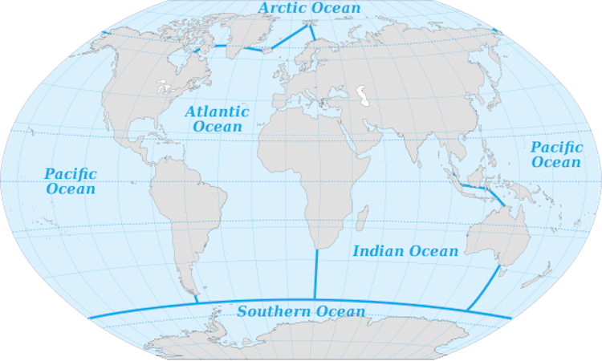
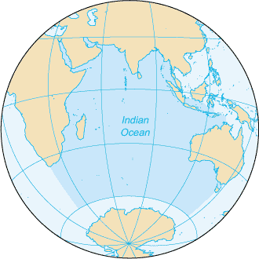

The Ocean

Jump To Bottom
The Pacific Ocean
The Indian Ocean
The Atlantic Ocean
The Arctic Ocean
The Southern Ocean
What is it?

The ocean is a vast body of saltwater that covers almost three fourths of
the world. There are 5 main oceans, the Pacific Ocean, the Indian Ocean, the
Atlantic Ocean, the Arctic Ocean, and the Southern Ocean.
The Pacific Ocean
The Pacific Ocean is the largest and deepest ocean, and is home to
the Mariana Trench, which is the deepest place in the world. It is home to
many different kinds of animals and is located to the east of America to
Asia and Australia. It is separated into the North Pacific Ocean and the
South Pacific Ocean by the equator.


The Indian Ocean
The Indian Ocean is one fifth out of the world’s total oceans area. It is
one the physically complex ocean, and stretches more than 10 000
kilometers. It is home of the Java Trench, and is bounded by Iran, Pakistan,
India, and Bangladesh to the north; the Malay Peninsula, the Sunda Islands of
Indonesia, and Australia to the east; Antarctica to the south; and Africa and
the Arabian Peninsula to the west.
The Atlantic Ocean
The Atlantic Ocean is the second largest ocean. It separates the

 continents of Europe and Africa to the east from those of North and South
continents of Europe and Africa to the east from those of North and South
America to the west. It is the largest drainage area in the world and receives
water from a great proportion of the largest rivers in the world. It’s name was
derived from Greek Mythology, and it means the “Sea of Atlas”.
The Arctic Ocean
The Arctic Ocean is the smallest ocean out of the 5 oceans and is
almost always covered in ice. It’s located in the Northern Hemisphere and is
almost completely surrounded by North America and Eurasia, including the
countries of Russia, Norway, Iceland, Greenland, Canada and the U.S. It has
many animals native to it’s area, with one being the polar bear.


The Southern Ocean
The Southern ocean is the fourth smallest ocean out of the 5 oceans, and
it is sometimes called the Antarctic Ocean. Like the Arctic Ocean, the Southern
Ocean is also usually covered in ice, and is approximately 35 million square
kilometers. It also has many animals native to it’s area, with one being the
Emperor Penguin, the largest penguin species in the world.
Jump To Top